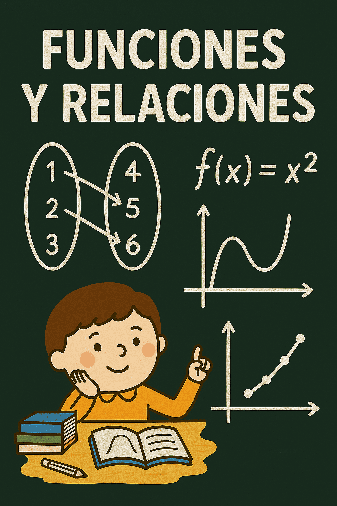
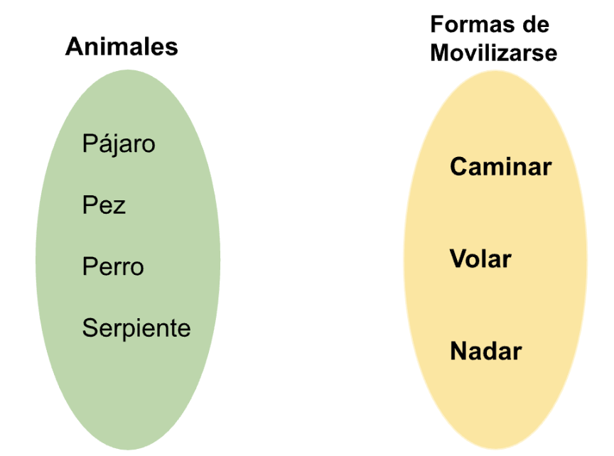
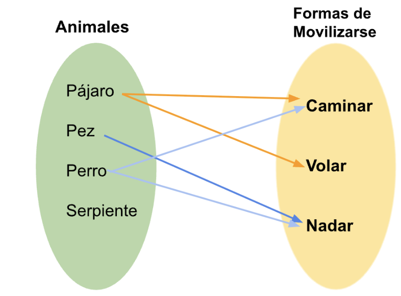
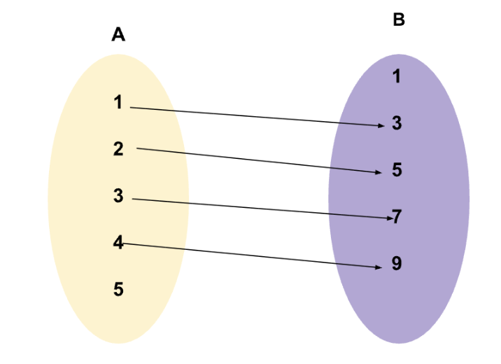
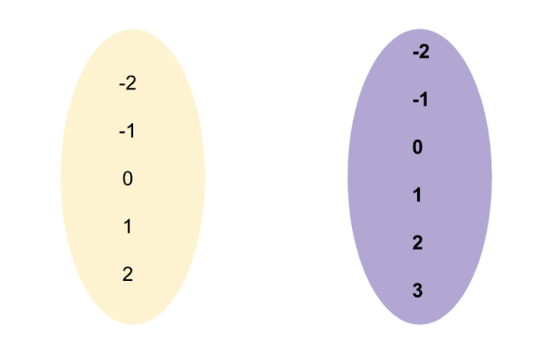
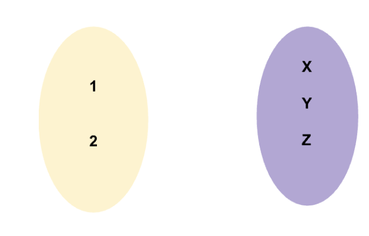

Funciones y relaciones
Concepto
Las relaciones y funciones definen una función entre dos conjuntos (Entradas y Salidas) de modo que tengan pares ordenados de la forma (Entrada, Salida). Relación y función son conceptos muy importantes en álgebra y cálculo . Se utilizan ampliamente tanto en matemáticas como en la vida real. Definamos cada uno de estos términos de relación y función para comprender su significado.

Ejemplo
Está dada por la correspondencia entre los elementos de dos conjuntos que forman parejas ordenadas, la formulación de una expresión que une dos o mas objetos entre si establece una relación
Sí, como hay dos conjuntos, como pueden ver, podríamos llamarlo el conjunto.de animales. Si existe el pájaro, el perro, el pez y la serpiente, y este es el conjunto de formas de moverse, por ejemplo, ¿qué es caminar, volar o nadar?

Entonces, una relación se da por la correspondencia entre los elementos de dos conjuntos.En otras palabras, si existe una correspondencia entre estos dos conjuntos que forman pares ordenados, entonces se dice que la formulación de una expresión que vincula dos o más objetos establece una relación.
Solución
Entonces los relacionamos
Por ejemplo, voy a relacionarlo aquí, por ejemplo, el pájaro puede caminar, pero también puede volar, generalmente los pájaros no pueden nadar, si conoces algún pájaro que pueda nadar bien, eso no importa, lo importante es el concepto de relación, el perro, por ejemplo, el perro puede caminar, el perro obviamente no puede volar, pero puede nadar,

Ejemplo 2
Si A = {1, 2, 3, 4, 5} y B = {1, 3, 5, 7, 9} y R la relación definida por la regla
R = {(x, y) / y = 2x + 1}, graficar R.
Solución
Los pares ordenados que pertenecen a la relación (que cumplen con y = 2x +
1) son: R = {(1, 3), (2, 5), (3, 7), (4, 9)}
Y la gráfica correspondiente es la siguiente:

Actividades
📌 Instrucciones para los estudiantes:
- Lee bien el problema.
- Subraya los datos importantes
- Identifica qué operación debes hacer primero, luego cuál es la siguiente.
- Resuelve paso a paso.
- Tu respuesta final con claridad.
Actividad 1
Relación establecida entre dos conjuntos a y b que asigna a cada valor del conjunto a (variable independiente) un único valor del segundo conjunto (variable dependiente).

Actividad 2
Sean los conjuntos: A= { 2,4,6 }, B={ m, n }. Hallar el producto cartesiano de A con B.

Creative Commons: Reconocimiento - compartir igual 4.0